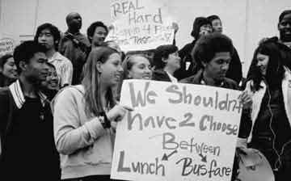

Submitted on Tue, 02/14/2006 - 9:27pm
Disclaimer - The following article is reposted here because it is an issue with some relevance to the IWW. The views of the author do not necessarily agree with those of the IWW and vice versa.
By Guillermo Mayer and Richard A. Marcantonio - Street Spirit, February 2006
When the late Rosa Parks protested an apartheid bus system 50 years ago, transit riders in Montgomery, Alabama, whether black or white, poor or well-off, all rode the same bus. Today's segregation, while less obvious, is in some ways more pernicious.
Affluent whites have left urban bus systems the way most left New Orleans on the eve of Hurricane Katrina: in their cars. Of those who commute on public transit, most now ride deluxe rail systems, leaving people of color to rely on a second-class and deteriorating bus system.
This is the scenario many low-income communities of color face in the San Francisco Bay Area, where substandard bus service operates as a "separate and unequal" transit system. Darensburg v. Metropolitan Transportation Commission, filed in April 2005 by East Bay bus riders and civil rights advocates against the region's transportation planning agency, challenges today's pervasive and insidious form of discrimination.
The suit takes it name from Sylvia Darensburg, who lives transit inequity every day. An African-American mother of three living in East Oakland, Darensburg fights her way out of poverty by working days and attending college classes at night. Since she cannot afford to own a car, she is entirely dependent on public transit provided by the AC Transit bus system.
In the 1970s, Darensburg remembers bus service that was reliable, cheap, and safe. Over the intervening decades, that system has spiraled downward. Inadequate bus service today severely limits Sylvia's access to many higher-paying jobs that are inaccessible by public transit. Even reaching jobs a few miles away in downtown Oakland is an arduous journey: She rides two buses with long waits for each, a trip that can take an hour each way.
Getting to college classes can take even longer, due to the elimination of bus routes and evening service. And she must walk up to 12 blocks at night to get home from the nearest bus stop in her neighborhood. Even routine errands like grocery shopping are physically draining experiences. "Every day, from the time I get up, I plan to get the bus," Darensburg says. "This affects your physical health."
No more yellow school buses
Since most school districts in the East Bay do not provide yellow school bus transportation, thousands of low-income youth also rely on the bus on a daily basis to get to and from school. On top of reliability, affordability is also an issue for many of these youth. In a recent survey of Oakland and Berkeley students, 61 percent said they skip lunch to pay for the bus ride home.
The hardship and frustration that Darensburg and these youth face each day is shared by tens of thousands of low-income African American, Latino, and Asian residents, including seniors and people with disabilities, who rely on bus service provided by AC Transit. As California's largest bus-only operator, AC Transit provides service to many communities with high poverty rates, running buses from North Richmond through Oakland and into southern Alameda County.
Nearly 80 percent of AC Transit's riders are people of color, and over 70 percent have incomes below $30,000. Nearly 60 percent are, like Darensburg, entirely transit dependent: They have no means of transportation other than public transit to get to essential destinations, such as jobs, school, grocery stores, and social services. Many of those who do have cars own older vehicles that they cannot afford to operate and maintain on a regular basis.
Despite the urgent needs of AC Transit's overwhelmingly minority ridership, the region's transportation planning agency, Metropolitan Transportation Commission (MTC), has continuously under-funded AC Transit over a period of decades, causing a precipitous decline in bus service and repeated fare hikes.
MTC controls nearly $1 billion annually in federal and state transit dollars, and in turn controls the quantity and quality of public transit services available to communities throughout the region. Rather than prioritize the needs of its most vulnerable transit users, or even operate in accordance with basic principles of cost-effectiveness, MTC has favored costly rail expansions for Bay Area Rapid Transit (BART) and Caltrain. These deluxe commuter rail systems, linking suburbs to major downtown business districts, serve riderships that are disproportionately white and affluent.
Discriminatory funding
People of color make up two thirds, and whites, a third of all transit users in the Bay Area. But whites make up a disproportionate share of BART and Caltrain passengers: 43 percent and 60 percent, respectively. White rail riders also have significantly higher incomes than AC Transit bus riders: 75 percent of BART riders have incomes over $30,000, and 53 percent of Caltrain riders have incomes over $75,000. In addition, 80 percent of BART riders and 83 percent of Caltrain riders own private automobiles.
Fully aware of these racial and income disparities, MTC gives rail riders a significantly greater public subsidy for each trip they take than it gives to AC Transit bus riders. AC Transit passengers receive a subsidy of public funds of $2.78 per trip. By contrast, BART riders receive more than double that -- $6.14 -- and Caltrain passengers receive $13.79, nearly five times more than a passenger of AC Transit. As a direct result, service levels on these commuter rail systems have reached an all-time high, while services continually decline, and fares rise, for AC Transit bus riders.
East Bay communities and activists have repeatedly asked MTC to change its inequitable funding practices. In April 1998, Carl Anthony co-founder of Urban Habitat, along with 26 other organizational cosigners, wrote MTC to oppose the agency's proposed 1998 Regional Transportation Plan (RTP). Questioning the mobility benefits that new highway projects would bring people of color, Anthony's letter urged MTC to conduct a comparative analysis to see how much of its $88 billion in funding would benefit high-income versus low-income communities, or whiter communities versus communities of color. MTC rebuffed the community's criticism and refused to perform the equity analysis requested by Anthony.
Stonewalling calls for justice
In early 2001, a large group of African-American ministers in North Richmond wrote to MTC seeking equity in the funding between AC Transit and commuter rail services. The ministers pointed out that MTC itself had ranked an AC Transit bus project in the Richmond area of western Contra Costa County, with a population that is 69 percent minority, as the most cost-effective project considered in MTC's 2001 RTP. This bus initiative would have cost a mere $0.75 per new rider, and served an overwhelmingly low-income community of color.
MTC refused to fund this project despite its small price tag. Instead, MTC devoted $2.3 billion to the least cost-effective projects: two commuter rail projects -- one for BART and the other for Caltrain -- both designed to serve disproportionately white, suburban populations, at a much higher cost per new rider.
In adopting its 2001 Regional Transportation Plan, MTC again refused to conduct a comparative analysis of the disparity between the benefits its funding conferred on high-income, whiter transit riders, and those it conferred on low-income riders of color. Indeed, up to the present day, MTC has yet to conduct such an analysis.
In November 2004, MTC was asked to perform just that kind of analysis by its Minority Citizens' Advisory Committee (MCAC), which adopted a set of simple environmental justice principles. These principles asked MTC to "[c]ollect accurate and current data essential to understanding the presence and extent of inequities in transportation funding based on race and income," and to "change its investment decisions as necessary to mitigate identified inequities."
MTC has so far failed to adopt, much less implement, these guiding principles. To the contrary, it repeatedly attempted to stonewall MCAC's efforts by contending that the principles wrongly presumed that inequities existed, and that further study was required "to define 'inequity.'" At the same time, it aggressively lobbied MCAC to water down its recommendations.
In April 2005, AC Transit bus riders of color, in coalition with civil rights and labor groups, filed the Darensburg action in federal court. The suit, brought as a class action on behalf of all current and future AC Transit riders of color, seeks to end MTC's racially discriminatory funding practices. The suit alleges that MTC violates federal and state civil rights laws by channeling funds to benefit predominantly white rail riders at the expense of AC Transit bus riders of color.
In addition to plaintiff Sylvia Darensburg, Vivian Hain from East Oakland, and Virginia Martinez from Richmond are individually named plaintiffs. Two organizational plaintiffs have also joined the suit: Communities for a Better Environment (CBE) and the Amalgamated Transit Union, Local 192.
The Darensburg lawsuit is an important tool in the long struggle for equity in Bay Area transportation funding. But that long community struggle demonstrates the essential role that a sustainable grassroots constituency must play in any long-term solution.
The Bay Area must draw lessons from the Los Angeles Bus Riders Union's (LA BRU) involvement in winning and implementing their lawsuit against the L.A. Metropolitan Transportation Authority (MTA). After a two-year legal fight, the LA BRU obtained a consent decree in 1996 obligating the MTA to reduce overcrowding on buses, maintain equitable fares between bus and rail, and create a multi-year New Service plan to eliminate transit segregation in Los Angeles.
But this historic legal victory did not stop MTA from aggressively resisting change. The agency fought the consent decree up to the U.S. Supreme Court, and stubbornly pursued its costly rail projects while simultaneously implementing new rounds of service cuts for bus routes.
MTA's aggressive tactics have been thwarted thus far by a highly organized and committed constituency of low-income and minority bus riders who have engaged in massive protests, direct action, and civil disobedience, as well as careful research, analysis and monitoring, to vindicate their legal rights.
Their determined effort has ensured that this legal victory bore concrete results: Since 1994, LA BRU, a force of 3,000 dues-paying bus riders, has secured over 2,000 compressed natural gas (CNG) replacement buses, more than 300 new CNG expansion buses, restored Night Owl service from midnight to 5 a.m., and reduced the price for bus passes and fares.
The victorious Bus Riders Union campaign illustrates that bus riders know better than anyone else what inadequacies they are facing, and are best suited to monitor conditions, set priorities, and apply political pressure to hold public agencies accountable. Like the MTA lawsuit, the ultimate success of the Darensburg case will largely depend on the participation of a sustainable grassroots constituency of bus riders.
Lessons of Montgomery boycott
Bay Area transit advocates must also draw on the lessons from Montgomery, Alabama. When NAACP lawyers challenging Jim Crow laws brought suit, they acted in a context created by the mobilization of large numbers of people in boycotts, demonstrations, and acts of civil disobedience. In these earlier struggles, legal strategies were tied to a broad range of other strategies that were primarily spearheaded, not by lawyers, but by organized communities.
The success of litigation strategies, both in the immediate sense of prevailing in court and in the broader sense of achieving progressive structural change, has always depended on a close link between legal tactics and community mobilization. In instances where inequity is so deeply ingrained and insulated from democratic participation, litigation is often an essential tool to initiate change.
But it is organized constituencies that both create the possibility of change and ensure that legal victories are implemented effectively. That is the case today in the East Bay, no less than it was 50 years ago in Montgomery, Alabama. To achieve transportation justice in the Bay Area, we will need the same sort of grassroots coalitions and coordination that were created in 1955.
Reprinted from Race, Poverty and the Environent, a journal of social and environmental justice published by Urban Habitat, www.urbanhabitat.org Guillermo Mayer is an attorney fellow, and Richard Marcantonio is a managing attorney, with the public interest law firm of Public Advocates, Inc., in San Francisco. They serve as co-counsel on the Darensburg case, together with Lieff Cabraser Heiman & Bernstein, Communities for a Better Environment, and Altshuler Berzon Nussbaum & Demain.